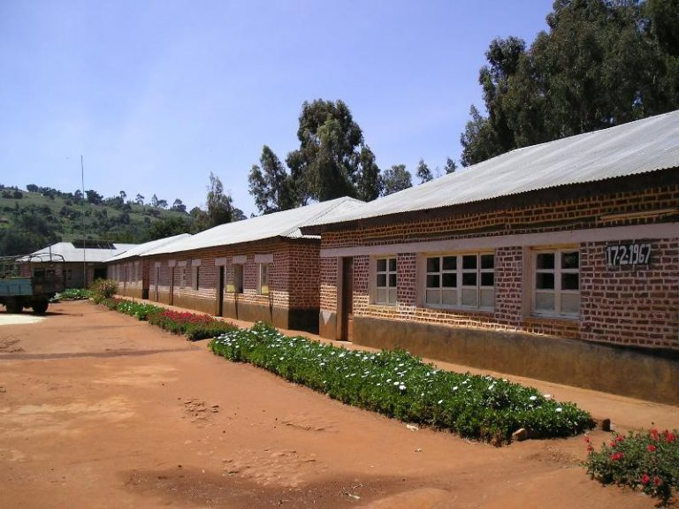
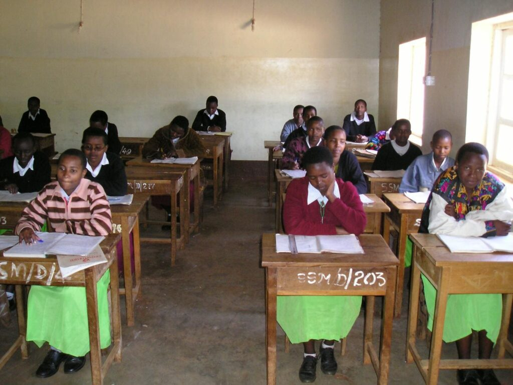

Eine Mauer, die ein Internat schützt.
Madunga Girls Secondary School – im Landesvergleich Platz 50 von 2.700, in der Region Manyara seit Jahren auf Rang 1.
Im ländlichen Bereich Tansanias siedeln die Menschen weit verstreut in der Landschaft. Es gibt zwar Ortschaften mit einer Handvoll Hütten, doch da kaum Infrastruktur vorhanden ist – Straßen, Strom, Wasser – bietet die Ansiedlung in geschlossenen Dörfern wenig Vorteile. Alle paar hundert Meter trifft man auf eine Hütte, mit einem Stall für Hühner, Ziegen und gelegentlich eine Kuh. Drumherum Mais und Bohnen. So leben die meisten Menschen in der Region Manyara.
Schulen, Krankenstationen und Kirchen sind nicht integraler Bestandteil der Dörfer. Sie wurden oft außerhalb in der freien Landschaft gegründet – so auch die Mädchen-Sekundarschule Madunga, in Trägerschaft der Diözese Mbulu. Nebenbei bemerkt: Die Madunga Girls School ist eine hervorragende Schule, geleitet von indischen Schulschwestern. Im landesweiten Ranking liegt sie auf Platz 50 von 2.700 entsprechenden Schulen.

Warum eine Mauer?
Die Sicherheit der Schülerinnen war oft gefährdet – durch wilde Tiere (Hyänen, Elefanten, Leoparden), aber auch durch zweibeinige Wesen aus der näheren Umgebung. Ein seit langem bestehender Wunsch der Schulleitung wurde in einem Projekt von Kusaidia Afrika erfüllt: eine Einfriedung der Mädchen-Schlafräume.
Zunächst plante die Schulleitung einen einfachen Maschendrahtzaun. Doch die Gemeinde Madunga empfahl dringend eine Mauer um die Schlafräume. So wurde umgeplant.
Da ursprünglich ein Maschendrahtzaun geplant war, reichte das Budget nach der Umplanung nicht aus für die Fertigstellung. In einem Nachtragsprojekt 2018 wurde die Einfriedung vollendet.

Leben im Internat
Die Girls Secondary School wird als Boarding School betrieben – als Internat. Da in Tansania kaum Verkehrsinfrastruktur vorhanden ist, werden sehr viele Sekundarschulen als Internate geführt. Die Unterkünfte sind sehr einfach: In einem Raum von etwa 5,5 m × 20 m schlafen rund 40 Schülerinnen in Stockbetten. Die Fläche des Bettes ist der einzige Individualbereich.
Schulen, die Bestand haben.
Ihre Spende geht in die beste Mädchenschule der Region Manyara – und in Tansanias Top 50.